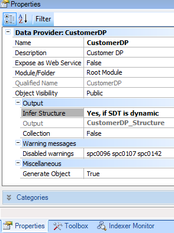
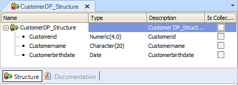

Indicates if GeneXus must infer the structure of the SDT (Structured Data Type) and create it, by analyzing the structured declared in the Data Provider source. Values
Description
If you declare a structure manually in the source of a Data Provider object, and you set the Data Provider Infer Structure property to "Yes, if SDT is dynamic", you are indicating that GeneXus must automatically create an SDT with the structure inferred from the Data Provider source. Also, GeneXus will complete the Data Provider Output property with the name of the new SDT. Run-time/Design-timeThis property applies only at design-time. Samples
If you define the following in the source of a Data Provider object:
Customer
{
CustomerId = ...
CustomerName = ...
CustomerBirthDate = ...
}
and you set the Infer Structure property as 'Yes, if SDT is dynamic':  the following SDT will be automatically created:  Note that the Data Provider Output property is automatically set with the name of the created SDT. Also, every time that the Data Provider is saved, the SDT structure will be inferred by the specifier. Scope Objects: Data Provider See Also
HowTo: Using the Infer Structure property of a Data Provider |
| Backlinks | |
| Dynamic structure property | HowTo: Using the Infer Structure property of a Data Provider |